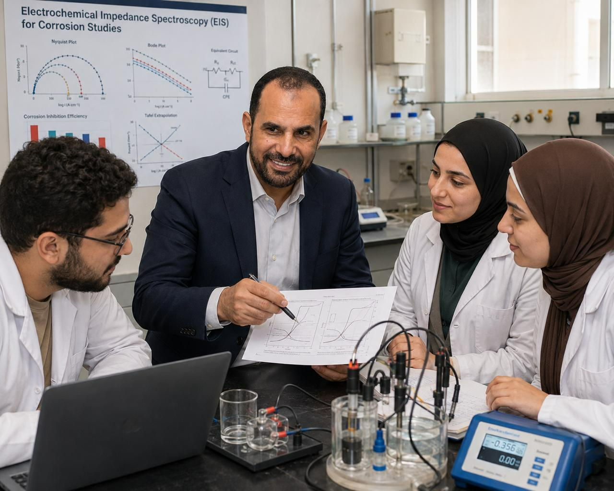
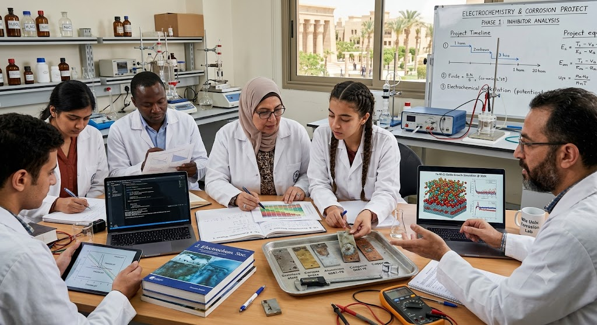

01
النزاهة العلميةResearch Integrity
توثيق البيانات واحترام أخلاقيات البحث والنشر.
Documenting data and respecting research and publication ethics.
Prof. Dr. Khaled Fouad Khaledالأستاذ الدكتور خالد فؤاد خالد
Professor of Physical Chemistryأستاذ الكيمياء الفيزيائية
Ain Shams University · Cairo, Egyptجامعة عين شمس · القاهرة، مصر
المجموعة البحثية والإشراف العلميResearch Group & Scientific Supervision
تعرض هذه الصفحة فلسفة الأستاذ الدكتور خالد فؤاد خالد في الإشراف العلمي وتطوير الباحثين في الكيمياء الكهربية وعلوم التآكل والكيمياء الحاسوبية، وتوضح مجالات التدريب والتعاون والبنية البحثية الداعمة.
This page presents Prof. Dr. Khaled Fouad Khaled’s approach to scientific supervision and researcher development in electrochemistry, corrosion science, and computational chemistry, together with the group’s training, collaboration, and research infrastructure.

الرؤية البحثيةResearch Vision
تقوم المجموعة على صياغة أسئلة بحثية واضحة، وتصميم تجارب قابلة للتكرار، وتحليل النتائج نقديًا، وربط القياسات الكهروكيميائية بالنمذجة الجزيئية والحسابات النظرية متى كان ذلك مناسبًا.
The group emphasizes clear research questions, reproducible experimental design, critical analysis, and—where appropriate—the integration of electrochemical measurements with molecular modelling and theoretical calculations.
توثيق البيانات واحترام أخلاقيات البحث والنشر.
Documenting data and respecting research and publication ethics.
الجمع المدروس بين التجربة والتحليل والحسابات.
Thoughtful integration of experiment, analysis, and computation.
خطة تطوير تناسب مرحلة كل باحث وأهدافه.
Development plans suited to each researcher’s stage and goals.
تعزيز العمل الجماعي وتبادل الخبرات.
Strengthening teamwork and knowledge exchange.
طلاب وباحثو المدرسة العلميةStudents & Research Network
تشمل القائمة طلاب الماجستير والدكتوراه الواردة أسماؤهم وموضوعات رسائلهم في المستندات المرفقة. كما تُعرض نماذج من الباحثين المتعاونين الواردة أسماؤهم في قائمة النشر العلمي.
The roster presents MSc and PhD students named with their thesis topics in the supplied records, together with selected research collaborators appearing in the publication list.
موضوع الرسالة: دراسات كهروكيميائية وحاسوبية لتآكل الحديد في الأوساط الحمضية باستخدام بعض المثبطات العضوية
Thesis: دراسات كهروكيميائية وحاسوبية لتآكل الحديد في الأوساط الحمضية باستخدام بعض المثبطات العضوية
عين شمس · 26/2/2018م – 1/9/2021م
Google Scholar searchموضوع الرسالة: دراسات كهروكيميائية وحاسوبية لتآكل وتثبيط تآكل الصلب منخفض الكربون في الأوساط الحمضية باستخدام بعض مثبطات التآكل العضوية
Thesis: دراسات كهروكيميائية وحاسوبية لتآكل وتثبيط تآكل الصلب منخفض الكربون في الأوساط الحمضية باستخدام بعض مثبطات التآكل العضوية
الأميرة نورة بنت عبد الرحمن – الرياض بالمملكة العربية السعودية · 9/3/2010م – 30/3/2014م
Google Scholar searchموضوع الرسالة: دراسة كهروكيميائية لتثبيط تآكل الحديد باستخدام بعض المركبات العضوية في الأوساط الحامضية.
Thesis: دراسة كهروكيميائية لتثبيط تآكل الحديد باستخدام بعض المركبات العضوية في الأوساط الحامضية.
عين شمس · 4/4/2005م – 17/6/2007
Google Scholar searchموضوع الرسالة: دراسات كهروكيميائية وتطوير مثبطات لتثبيط تآكل النحاس
Thesis: دراسات كهروكيميائية وتطوير مثبطات لتثبيط تآكل النحاس
عين شمس · 9/6/2007م – 15/8/2010م
Google Scholar searchموضوع الرسالة: استخدام الشبكات العصبية في دراسة تثبيط تآكل الحديد في الأوساط الحمضية
Thesis: استخدام الشبكات العصبية في دراسة تثبيط تآكل الحديد في الأوساط الحمضية
الطائف بالمملكة العربية السعودية · 2/2/2015 – 23/11/2016
Google Scholar searchموضوع الرسالة: تصميم وتوصيف جزيئات نانوية للتطبيقات البيئية
Thesis: تصميم وتوصيف جزيئات نانوية للتطبيقات البيئية
عين شمس · 21/11/2019م – لم تمنح بعد
Google Scholar searchموضوع الرسالة: فهم تثبيط التآكل: تفاعلات مشتقات البيرازول-الأسيتيل في الأوساط المائية.
Thesis: فهم تثبيط التآكل: تفاعلات مشتقات البيرازول-الأسيتيل في الأوساط المائية.
عين شمس · 1/4/2019م – 18/10/2023م
Google Scholar searchموضوع الرسالة: تقييم كهروكيميائي وحاسوبي لبعض مثبطات التآكل العضوية لمعدن الأاستيل 304 في الأوساط الحمضية
Thesis: تقييم كهروكيميائي وحاسوبي لبعض مثبطات التآكل العضوية لمعدن الأاستيل 304 في الأوساط الحمضية
عين شمس · 19/7/2022م – لم تمنح بعد
Google Scholar searchباحث متعاون يظهر اسمه في قائمة المنشورات العلمية.
Research collaborator named in the documented publication list.
Google Scholar searchباحث متعاون يظهر اسمه في قائمة المنشورات العلمية.
Research collaborator named in the documented publication list.
Google Scholar searchباحث متعاون يظهر اسمه في قائمة المنشورات العلمية.
Research collaborator named in the documented publication list.
Google Scholar searchباحث متعاون يظهر اسمه في قائمة المنشورات العلمية.
Research collaborator named in the documented publication list.
Google Scholar searchباحث متعاون يظهر اسمه في قائمة المنشورات العلمية.
Research collaborator named in the documented publication list.
Google Scholar searchباحث متعاون يظهر اسمه في قائمة المنشورات العلمية.
Research collaborator named in the documented publication list.
Google Scholar searchالمستندات الأكاديمية المؤيدة متاحة عند الطلب.Supporting academic documentation is available upon request.
الإشراف والتدريبSupervision & Training
يشمل الإشراف تحديد المشكلة العلمية ومراجعة الأدبيات، وبناء الخطة المنهجية، والتدريب على القياسات الكهروكيميائية وتحليل البيانات، وربط النتائج بالتفسير النظري، ثم إعداد الرسالة والبحث للنشر وفق الأصول الأكاديمية.
Supervision covers problem definition and literature review, methodological planning, electrochemical measurements and data analysis, integration with theoretical interpretation, and preparation of theses and manuscripts according to academic standards.
تصميم الخلايا والقياسات وتحليل المنحنيات.
Cell design, measurements, and curve analysis.
تقييم السلوك وآليات الحماية والمثبطات.
Assessment of behaviour, protection mechanisms, and inhibitors.
النمذجة الجزيئية وتفسير التفاعلات على السطوح.
Molecular modelling and interpretation of surface interactions.

البنية البحثيةResearch Infrastructure


نشاط علمي موثقDocumented Scientific Activity
تدعم الكتب والمذكرات العلمية تدريب الطلاب والباحثين وبناء المعرفة الأساسية.
Books and scientific notes support student and researcher training.
Supporting record: pp. 5–21تسهم الخدمة التحريرية والتحكيمية في تنمية معايير الكتابة والتقييم العلمي.
Editorial and review service strengthens standards of scientific writing and evaluation.
Supporting record: pp. 48–52تعكس المشاركات والتقدير العلمي امتداد شبكة التواصل الأكاديمي.
Scientific participation and recognition reflect an extended academic network.
Supporting record: pp. 53–89تتيح العروض العلمية مناقشة النتائج وتطوير مهارات التواصل لدى الباحثين.
Scientific presentations support discussion and researcher communication skills.
Supporting record: pp. 90–104التعاون والانضمامCollaboration & Joining
يمكن للطلاب والباحثين والمتعاونين إرسال نبذة مختصرة عن الخلفية العلمية، والاهتمام البحثي، والغرض من التواصل. لا يمثل التواصل وعدًا بالقبول أو التمويل، ويخضع لأي تعاون لتوافر الإشراف والإمكانات والموافقات المؤسسية.
Students, researchers, and collaborators may send a concise summary of their academic background, research interest, and purpose. Contact does not imply admission or funding; collaboration depends on supervisory capacity, resources, and institutional approvals.
Contact & Collaborationالتواصل والتعاون
Use the dedicated contact page for verified contact details, academic profiles and the WhatsApp enquiry form.استخدم صفحة التواصل المخصصة للاطلاع على بيانات الاتصال الموثقة والملفات الأكاديمية ونموذج الاستفسار عبر واتساب.